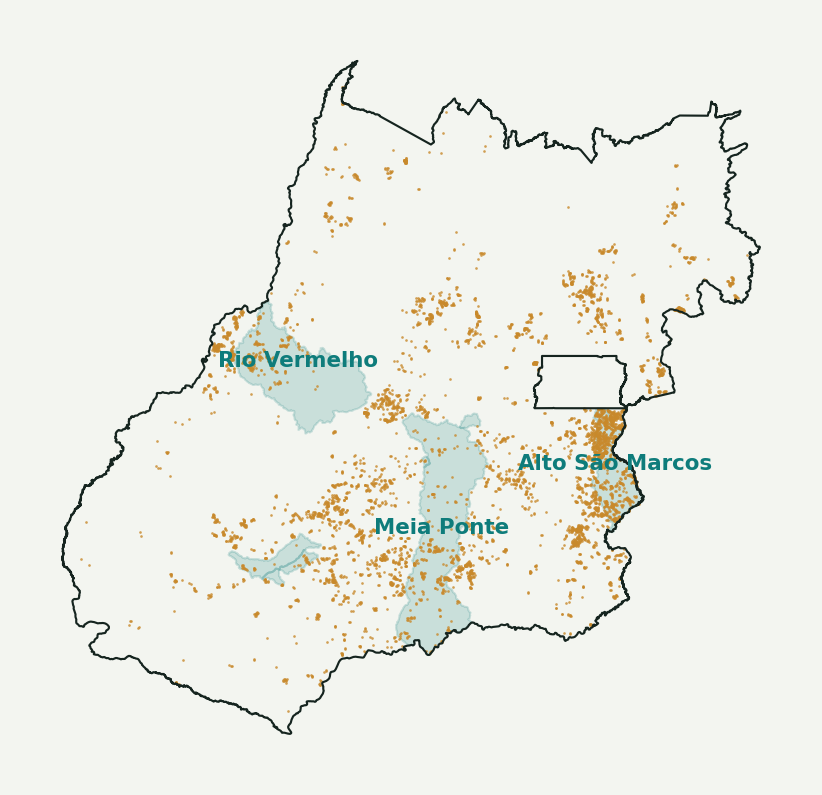
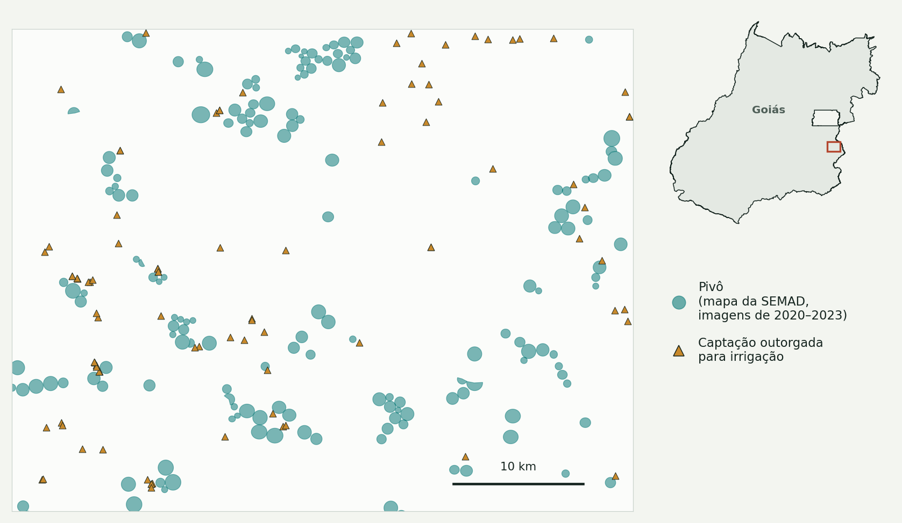
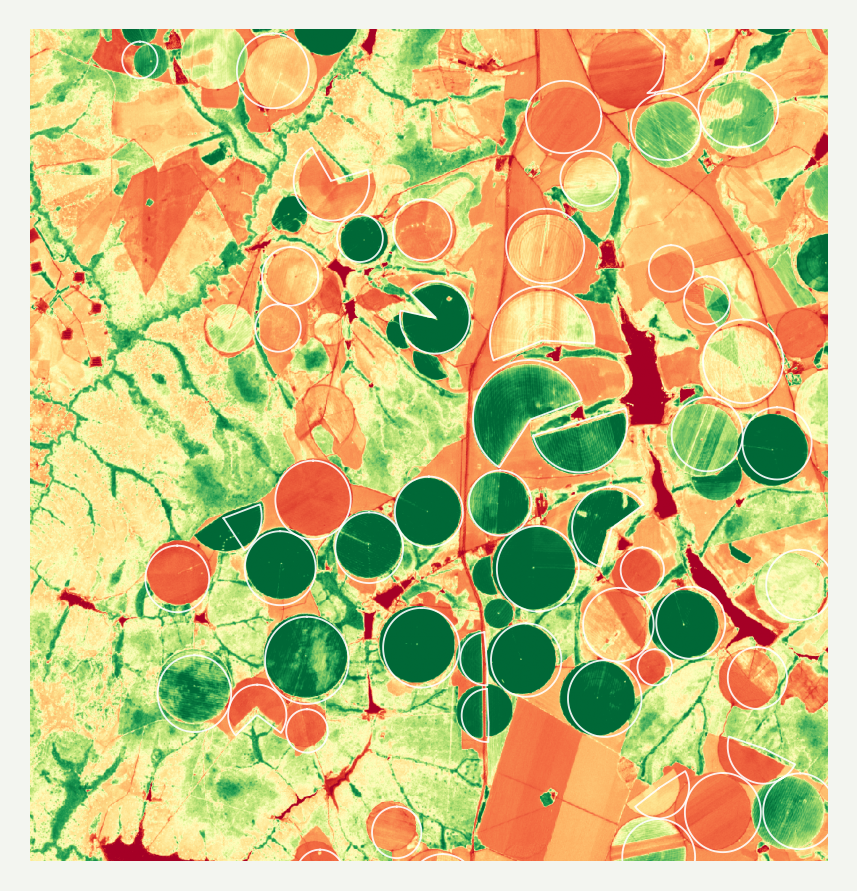
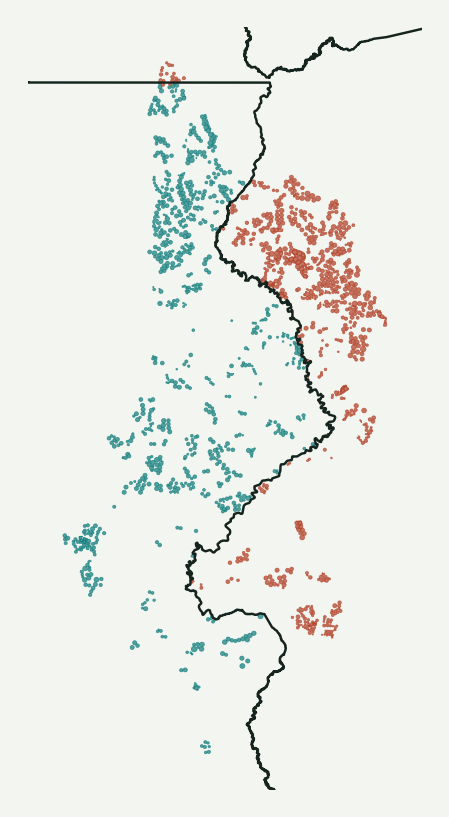
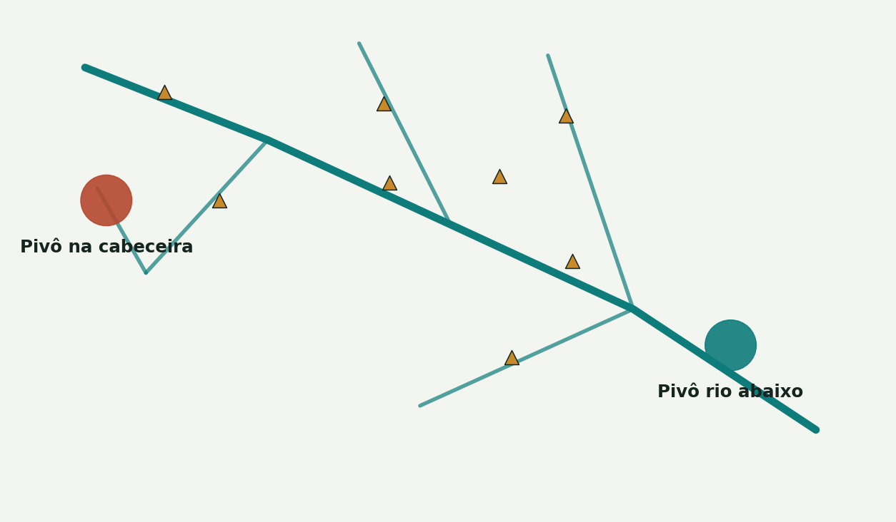

Um teste exploratório com IA
Irrigação sem outorga: um primeiro teste com IA
O que deu para explorar em poucas horas com dados públicos, imagens de satélite e IA generativa, e o que fica para quem conhece o dado.

O ponto de partida
O pedido, como chegou no formulário
Contexto
“Minha intenção é dar início em projeto que visa utilizar inteligência artificial e sensoriamento remoto para identificar áreas irrigadas que não possuem autorização (outorga) para tanto.”
Resultado esperado
“Relatórios padronizados que seriam cruzados com o banco de dados das outorgas.”
Tarefa e dificuldade
“Atualmente a identificação de áreas irrigadas, principalmente pivôs, é feita manualmente através de observações de imagens de satélite. […] são feitos apenas quando surge uma demanda específica. A ideia aqui seria automatizar essa análise e rodá-la em períodos estratégicos como por exemplo a época de seca no estado de Goiás. […] o foco inicial seria em bacias que apresentam criticidade hídrica.”
Como foi este teste
O que foi feito
- Algumas horas de trabalho com IAs, uma conferindo a outra
- Só dados públicos: o servidor de mapas da SEMAD-GO e imagens Sentinel-2
- Cada resultado foi checado nos dados antes do passo seguinte
O que não tínhamos
- Os sistemas internos e o histórico das análises da equipe
- O conhecimento de campo de quem acompanha essas áreas
- Tempo para validar os resultados com quem conhece os casos
Os números a seguir são preliminares. Servem para explorar o caminho, não como resultado final.

Os dados já existem, e são públicos
5.586
pivôs mapeados pela SEMAD até 2023 (305 mil ha)
6.121
outorgas de irrigação, cada uma com o ponto de captação
8
bacias críticas delimitadas
Fonte: servidor de mapas público da SEMAD-GO (SIGA, WFS), consultado em 21/10/2026. Pontos laranja: pivôs da camada “Pivôs Centrais 2023” (inspeção visual em imagens PlanetScope de 2020 a 2023). Áreas verde-água: bacias críticas.
Mas as duas bases não conversam
O pivô é uma área, um círculo no mapa
A outorga é um ponto: onde a água é captada
Nenhum código liga um ao outro. A captação pode ficar longe do pivô, ser um poço ou um barramento que atende vários pivôs.

Recorte em Cristalina (quadro vermelho). Pivôs: camada “Pivôs Centrais 2023” da SEMAD-GO, mapeada à mão em imagens PlanetScope de 2020 a 2023. Triângulos: pontos de captação outorgados para irrigação.
O que o satélite mostra numa data da seca
Cor natural

NDVI: verde-escuro = vegetação ativa
54
pivôs do mapa da SEMAD no recorte
21
verdes nesta data
23
secos: colhidos, em descanso ou parados?
Sentinel-2, 1º/8/2025, Cristalina, recorte de cerca de 13 km. Contorno branco: pivô no mapa de 2023 da SEMAD. Verde: NDVI acima de 0,6; seco: abaixo de 0,35.
O que separa um pivô é a série, não uma data
Uma data de agosto
0,44
Pivôs e áreas vizinhas com NDVI parecido. Não separa.
Maio a outubro
0,84
A variação ao longo da seca separou bem os pivôs.
O pivô fica verde em parte da seca, quando o entorno seca. A seca é a janela para coletar imagens; o critério é o comportamento ao longo dela.
AUC: 0,5 não separa; 1 separa tudo.
É o caminho da literatura: métricas da série e um classificador treinado com casos que o analista conhece.
Teste preliminar: recorte de 31 × 20 km no sudeste de Goiás, 20 pivôs do mapa da SEMAD e 150 áreas de referência, Sentinel-2 de maio a outubro de 2025. Conta por pixel e sem a correção do Sentinel-2: vale refazer.
Primeiro cruzamento, feito com IA em poucos minutos
2.550
pivôs
139 mil
hectares
mapeados sem nenhuma outorga a até 2 km.
Um bom ponto de partida, que ainda não é a resposta.
Por que esse primeiro número ainda não é a resposta
Fora de Goiás
Parte dos pivôs está em Minas e no DF. Lá a outorga é de outro órgão.
Contado duas vezes
Quatro camadas de pivôs descrevem os mesmos pivôs.
Rio federal
A outorga é da ANA e não está nessa base.
Captação longe
A água pode vir de um ponto distante ou de um barramento.
Poço
Captação subterrânea tem regras próprias.
Cada motivo vem de conhecer o assunto. É aí que quem trabalha com esses dados faz a diferença.
Ajustes ao longo do teste
Duas correções que vieram de olhar o dado

Pivôs fora de Goiás
Pivôs a 22 km da outorga mais próxima ganharam uma explicação técnica, que não se confirmou. 812 dos 1.663 pivôs da camada de São Marcos estão em Minas e no DF (em vermelho).
Ajuste: considerar só Goiás.

A regra que media a posição no rio
Contar qualquer outorga rio acima deixava a cabeceira sem cobertura e o rio abaixo sempre coberto.
Ajuste: mesma sub-bacia e distância.
Ajustes ao longo do teste
E duas que mostram os limites de hoje
A ligação ficou rígida
73%
sem outorga localizável
41%
desses com outorga a até 2 km
Sem um código que ligue pivô e outorga, a regra automática fica entre generosa e rígida demais.
Uma correção do satélite
74
secos, sem a correção
50
secos, com a correção
O Sentinel-2 soma um valor fixo às imagens desde 2022. Sem descontar, os pivôs parecem mais secos (79 pivôs, 13/8/2025).
Em poucas horas, a IA chegou longe. Cada ajuste veio de alguém conferindo o dado.
Com o conhecimento da equipe e mais tempo, o resultado tende a ser bem melhor do que este primeiro teste.
O que já foi possível em poucas horas
Achar e ler os dados públicos da SEMAD
Juntar quatro camadas de pivôs sem duplicatas
Cruzar pivôs e outorgas em cerca de 1 minuto
Classificar a ligação em níveis de evidência
Ler imagens Sentinel-2 sem login e sem custo
Testar uma ideia de detecção e achar uma melhor
Tudo com dados públicos e código escrito pelas IAs, que roda num computador comum.
O caminho, e até onde o teste chegou
1
Base de pivôs
Mapa estadual de 2023 e atualizações por bacia (Araguaia 2025, São Marcos 2026).
Já existe
2
Detectar irrigação
Série de imagens da seca e um classificador treinado com casos do analista.
Teste inicial
3
Atualizar o mapa
Hoje feito à mão, bacia a bacia. A peça 2 pode acelerar.
A construir
4
Ligar à outorga
Hoje por proximidade. Fica confiável com um código interno.
Primeira versão
5
Ficha de cada caso
Imagens, série da seca e outorgas próximas.
Protótipo
6
Validação
O analista marca o que vê; sai o relatório. A decisão é do órgão.
Pessoa
Depois do encontro
Um protótipo de triagem
O computador junta os casos, as imagens e as outorgas próximas. A pessoa olha um caso de cada vez e marca o que vê.
Imagem da seca de 2022 e de 2025, e o verde do pivô ao longo da seca
Quatro respostas, inclusive "tem outorga que eu conheço"
Relatório e tabela prontos ao final, sem concluir irregularidade

Protótipo montado por outra IA (DeepSeek) a partir da conversa e ajustado depois. 18 pivôs reais do mapa público em que a regra simples não achou outorga.
Por que começar pela triagem
Para ensinar um programa a achar pivô irrigado, faltam exemplos conferidos. Cada marcação na triagem é um exemplo. Uma possível sequência:
1 · Triagem
Uma bacia, uma estação seca
Revisar algumas dezenas de casos e ver se o relatório serve ao trabalho.
Protótipo pronto
2 · Piloto
Fila periódica, com registro
Um servidor da SEMAD, login e histórico. Algumas centenas de casos marcados.
Depende da SEMAD
3 · Detector
Treinado com as marcações
Série de imagens e um classificador. O erro é medido contra os casos conferidos.
Pesquisa
É o mesmo princípio do DETER, do INPE: alerta automático, verificação humana e só então o laudo.
Onde a IA generativa entra, e onde a decisão é sua
A IA faz
- Escreve e corrige o código de cada peça
- Explora os dados e acha inconsistências
- Redige a ficha de cada caso e o relatório
- Lê normas e documentos, para você conferir
Você decide
- Qual regra vale
- O que é caso para fiscalização
- O que entra no processo e no relatório
- Quando o resultado está bom o bastante
Achados que já saem dos dados
10%
das outorgas de irrigação têm a área irrigada preenchida (585 de 6.121)
2.518
outorgas de irrigação marcadas como “não instaladas”
42
em rio federal: as outorgas da ANA não estão nessa base
Nenhum desses achados precisou de IA para detectar pivô. Vieram de olhar a tabela.
Camada pública de usos outorgados da SEMAD-GO, finalidades de irrigação, consultada em 21/10/2026.
Quatro cuidados
Não é lista de infratores
A automação aponta casos para conferir. Quem decide e autua é o órgão, no processo.
Verde não prova irrigação
A safrinha pode estar verde em agosto. Comparar com o entorno e repetir em várias datas.
Dados pessoais fora da IA pública
Outorga e CAR trazem nomes e CNPJ. Trabalhar com a tabela sem essas colunas.
Conferir antes de citar
Lei, norma, número ou artigo vindo de IA só entra num documento depois de lido na fonte.
Para conversar
Hoje
Como uma área irrigada sem outorga é descoberta? Que documento sai no fim?
Desde 2023
As atualizações de 2025 e 2026 foram à mão? Quanto tempo levaram?
A ligação
O sistema de outorga tem o polígono da área irrigada ou o número do CAR?
As ferramentas
QGIS, Python, Earth Engine? Que IA está disponível no trabalho, e com que regras?
A pós
Que peça do caminho vira pesquisa? O que a dissertação precisa entregar?
A validação
Quem conferiria os casos apontados, e quanto tempo essa pessoa tem?
Possíveis próximos passos
1
Usar a triagem numa bacia crítica
Revisar algumas dezenas de casos e ver se o relatório serve ao trabalho. Anotar quanto tempo leva cada caso.
2
Descobrir o código que liga pivô e outorga
Polígono da área irrigada, número do CAR ou outro identificador nos sistemas internos.
3
Testar a detecção pela série
Série de imagens da seca e um classificador simples, treinado com os casos marcados. A IA escreve o código; você confere.